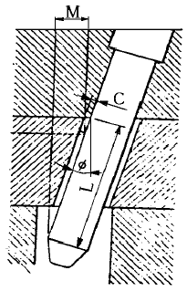
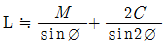
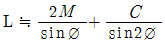
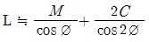
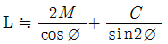
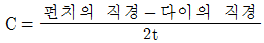
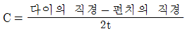
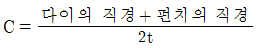
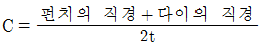

사출(프레스)금형산업기사 (2003-08-31 기출문제)
1과목: 금형설계
1. 다음 중 2매구성 금형의 특징과 거리가 먼 것은?
- 성형사이클을 빠르게 할 수 있다.
- 금형 제작비가 싸다.
- 핀 포인트 게이트 적용이 용이하다.
- 성형품과 게이트는 성형후에 절단가공을 해야 한다.
(정답률: 82%)

2. 프레스에 금형을 설치 할때의 주의 사항이다. 틀린 것은?
- 다이, 펀치홀더 면을 깨끗이 한다.
- 하형을 설치 한후에 상형을 설치한다.
- 상, 하형을 맞출때 먼지, 쇳가루 등이 묻지 않도록 한다.
- 볼스터와 금형면을 평행으로 설치한다.
(정답률: 80%)
3. 사출된 수지가 금형의 게이트에서 고화 되어가는 것을 무엇이라고 하는가?
- 실(seal)
- 크래이징(crazing)
- 크랙(crack)
- 큐어링(curing)
(정답률: 68%)
4. 비제한 게이트 특성 중 틀린 것은?
- 압력손실이 적다.
- 수지량이 절약된다.
- 금형의 구조가 간단하고 고장이 적다.
- 스프루의 고화 시간이 비교적 적어 사이클이 짧다.
(정답률: 39%)
5. U 굽힘가공에서 스프링 백의 방지법이 아닌 것은?
- 틈새를 작게 한다.
- 펀치 각반지름을 작게 한다.
- 굽힘 깊이를 작게 한다.
- 소재의 항복 강도를 낮춘다.
(정답률: 35%)
6. 고정스트리퍼식 프로그레시브금형에서 펀치 고정판(punch plate)의 역할에 대해서 설명하였다. 다음 중 가장 알맞는 것은?
- 제품을 절단하는 역할을 한다.
- 소재를 안내하는 역할을 한다.
- 펀치안내 및 제품을 밀어내는 역할을 한다.
- 펀치 및 사이드 커터와 파일럿 핀 등을 잡아 주거나 고정하는 역할을 한다.
(정답률: 83%)
7. 하이드로 포밍가공(hydrau forming)을 올바르게 설명한것은?
- 금속판이나 블랭크의 전표면을 규제하는 밀폐형에서 압축하여 가공하는 것
- 통모양의 용기, 관등의 측벽을 내부로 부터 압력을 가해서 가공하는 것
- 여러가지 허프(HERF)장치를 사용하여 초고속으로 행하는 가공
- 펀치만 금형을 사용하고 다이는 유압(액압)으로 지지된 고무막을 사용하여 제품을 가공하는 것
(정답률: 70%)
8. 두께 2㎜, 굽힘길이 200㎜의 연강판을 V굽힘가공을 할 때 소요되는 힘은 몇 ton 인가? (단, 인장강도는 40㎏/mm2, 다이의 어깨 폭은 판 두께의 8배, 비례상수 K=1.33이다.)
- 1.33
- 17.02
- 8.51
- 2.66
(정답률: 26%)
9. 그림과 같은 앵귤러 핀 작동방식의 언더컷 처리 기구에서 앵귤러 핀의 길이 L을 구하는 식은?





(정답률: 48%)
10. 성형품의 이젝터 방법의 결정은 성형재료나 성형품의 형상에 의해서 좌우되지만 성형품은 변형이 되지 않고 신속하게 빼낼 수 있어야 한다. 다음에서 이젝터 방식에 거의 사용되지 않는 것은?
- 이젝터핀에 의한 방법
- 슬리브 이젝터에 의한 방법
- 스프링에 의한 방법
- 플랫 이젝팅 방법
(정답률: 65%)
11. 드로잉 공정 설계시 고려하지 않아도 되는 것은?
- 리스트라이킹의 유무
- 블랭크 지름과 두께비
- 트리밍 여유
- 시어각의 크기
(정답률: 57%)
12. 트랜스퍼 프레스가공의 특징과 가장 관계가 먼 항목은?
- 중간풀림이 필요하다.
- 작업공간을 줄일 수 있다.
- 재료를 절약할 수 있다.
- 작업자의 위험이 적고 안전하게 작업을 감독할 수 있다.
(정답률: 66%)
13. 성형품 치수오차 발생요인 중 금형의 손모에 직접 관련되는 것은?
- 마모, 열팽창
- 혼합비, 착색제 등의 첨가제의 영향
- 외부응력에 의한 크리프, 탄성회복
- 이형, 밀어낼 때의 소성변형
(정답률: 48%)
14. 다음은 프레스의 3능력을 표시한 것이다. 이들 중 3능력이 아닌 것은?
- 압력능력
- 토크능력
- 일의능력
- 코킹능력
(정답률: 70%)
15. 금형설계에 컴퓨터가 도입되어 게이트 위치 선정과 러너의 크기를 설정하고, 수지의 유동흐름 등을 컴퓨터를 통해 해석하는 방법을 무엇이라고 말하는가?
- CAD
- CAE
- CAM
- CAT
(정답률: 83%)
16. 다음은 사출금형의 온도 콘트롤에 대한 효과를 설명한 것이다. 이 중에서 맞지 않는 것은?
- 치수정밀도 향상된다.
- 성형 사이클이 단축 된다.
- 변형을 방지 한다.
- 성형품 강도 및 경도가 증가 된다.
(정답률: 52%)
17. 사출성형기에서 형체 실린더의 유압이 40㎏f/cm2이고 실린더 직경이 100 mm 라면 형체력은?
- 3.14 ton
- 31.4 ton
- 314 ton
- 3140 ton
(정답률: 52%)
18. 프레스금형에서 클리어런스(clearance)의 크기의 결정 식으로 옳은 것은? (단, t는 소재 두께임)




(정답률: 58%)
19. 다음 성형조건 중 성형품의 치수 변화가 가장 큰 요인은?
- 사출압 과다
- 냉각시간의 부적합
- 게이트의 선정불량
- 사출량 과다
(정답률: 61%)
20. 봉재의 끝을 업셋팅하여 볼트, 리벳 등과 같이 머리를 만드는 것은?
- 스웨이징
- 헤딩
- 사이징
- 코이닝
(정답률: 65%)
2과목: 기계가공법 및 안전관리
21. 다음 중 오차의 종류가 아닌 것은?
- 개인적인 오차
- 온도에 기인하는 오차
- 측정기구 사용 상황에 따른 오차
- 재료 소성에 기인한 오차
(정답률: 76%)
22. 피치원 지름이 320mm인 기어의 모듈(Module)이 5일때 잇수는 얼마인가?
- 5개
- 32개
- 64개
- 124개
(정답률: 88%)
23. 비교적 생산성과 정밀도가 높고 복잡한 형상도 성형가능한 플라스틱 성형법은?
- 사출성형
- 압축성형
- 진공성형
- 트랜스퍼성형
(정답률: 74%)
24. 프레스의 압축 금형으로 성형하는 방법이 아닌 것은?
- 트리밍
- 코이닝
- 엠보싱
- 스웨이징
(정답률: 75%)
25. 금형 가공용 공구로 작업할 때 안전 사항으로 잘못된 것은?
- 핸드 드릴로 구멍을 뚫을 때 끝까지 힘을 준다.
- 핸드 그라인더 작업할 때 불꽃 비산에 유의한다.
- 전기 폴리싱 작업할 때 앞치마를 착용한다.
- 사포를 사용하여 금형의 표면을 연마할 때 무리한 힘을 가하지 않는다.
(정답률: 80%)
26. 지그를 사용하는 목적 중 틀린 것은?
- 작업이 복잡하여 구멍의 위치가 부정확하다.
- 제품이 일정하여 호환성이 있다.
- 미숙련자도 작업이 가능하다.
- 대량생산에 적합하다.
(정답률: 80%)
27. 연삭액의 역할이 아닌 것은?
- 냉각성
- 유동성
- 흡수성
- 방식성
(정답률: 78%)
28. 다음 스프링 백에 대한 설명 중 틀린 것은?
- 스프링 백이 작을수록 정밀한 제품이 얻어진다.
- 굽힘반경을 크게 할 수록 스프링 백은 작아진다.
- 기계 프레스보다 액압 프레스로 긴 시간 가압하면 스프링백은 작아진다.
- V굽힘에서는 항상 스프링 백이 외측으로 나타난다.
(정답률: 64%)
29. 다음의 침탄법과 질화법에 대한 비교 설명 중 맞지 않는 것은?
- 침탄법이 질화법보다 경도가 낮다.
- 침탄법은 침탄 후 열처리가 필요없다.
- 침탄층은 질화층보다 여리지 않다.
- 침탄법은 침탄후 수정이 가능하나 질화법은 질화 후 수정이 불가능하다.
(정답률: 29%)
30. 판두께가 2mm인 연강에 지름 20mm인 구멍을 펀칭하려고 한다. 이때 프레스의 슬라이드 평균속도를 5m/min, 기계효율을 70%라 할때 소요동력은 얼마인가? (단, 전단 저항은 25kg/mm2이다.)
- 약 4.99ps
- 약 5.99ps
- 약 6.54ps
- 약 7.54ps
(정답률: 20%)
31. 끼워맞춤에서 H7g6 이 의미하는 것은?
- 구멍 기준식 H7급으로 헐거운 끼워맞춤이다.
- 축 기준식 H6급으로 헐거운 끼워맞춤이다.
- 구멍 기준식 H7급으로 중간 끼워맞춤이다.
- 축 기준식 H6급으로 억지 끼워맞춤이다.
(정답률: 46%)
32. 회전하는 상자에 공작물과 숫돌입자, 공작액, 콤파운드 등을 함께 넣어 공작물의 표면 요철이나 버(burr)를 제거하는 가공법은?
- 슈우퍼피니싱
- 액체호우닝
- 버핑가공
- 배럴가공
(정답률: 76%)
33. 다음 중 비교 측정기는?
- 버니어켈리퍼스
- 하이트게이지
- 다이얼게이지
- 마이크로미터
(정답률: 69%)
34. 표면 다듬질 가공법으로 부품의 피로강도를 높힐 수 있는 것은?
- 버어니싱
- 래핑
- 콜드호빙
- 쇼트 피니싱
(정답률: 66%)
35. 금형제작시 평볼트 또는 소형나사 머리부를 가공물의 몸체내에 삽입하기 위하여 구멍의 상부를 원통형으로 크게 가공하는 작업은?
- 스폿페이싱
- 드릴링
- 카운터싱킹
- 카운터보링
(정답률: 91%)
36. NC 공작기계에서 스핀들 및 절삭유 급유 등을 하게 되는데 이러한 것을 총칭해서 어떤 기능이라 하는가?
- G기능
- M기능
- T기능
- S기능
(정답률: 95%)
37. 연삭숫돌의 표시에 WA46-H8V 라고 되어있다. H 는 무엇을 나타내고 있는가?
- 결합제
- 결합도
- 입도
- 조직
(정답률: 72%)
38. 다음중 고속가공기의 장점을 설명한 것으로 가장 바르지 못한 것은?
- 2차 공정을 증가 시킨다.
- 공작물의 변형을 감소 시킨다.
- 표면정도를 향상 시킨다.
- 얇고 취성이 있는 소재를 효율적으로 가공 한다.
(정답률: 87%)
39. 방전가공의 전극재료 구비 조건 중 틀린 것은?
- 가공에 따른 전극의 소모가 적을 것
- 기계가공성이 좋을 것
- 피가공 재료에 대하여 안정된 가공을 할 수 있는 것 일것
- 높은 경도를 가질 것
(정답률: 70%)
40. 다음 열처리 용어에 대한 설명 중 틀린것은?
- 담금질균열 : 담금질할 때 작업중 또는 직후 얼마되지 않아 균열이 생기는 경우가 있다.
- 심랭처리 : 담금질된 강의 강도를 증가시키고 시효변형을 방지하기 위한 목적으로 0℃ 이상인 온도에서 처리
- 질량효과 : 같은 재질로서 열처리 조건이 동일할 때에는 열처리한 물건의 크기 및 무게에 따라 열처리 효과에 미치는 차이를 표시 하는것
- 담금질효과 : 냉각속도에 영향을 받게되며 냉각액과 밀접한 관계가 있다.
(정답률: 47%)
3과목: 금형재료 및 정밀계측
41. 다음 중 사출금형의 로케이트링 재료로 가장 적합한 것은?
- SNC22
- SCr22
- GC100
- SM45C
(정답률: 89%)
42. 다음 중 0.01 mm보통형 다이얼 게이지의 확대 방식은?
- 레버식
- 치차식
- 나사식
- 광학식
(정답률: 32%)
43. 25∼50 mm 측정범위를 가진 외경 마이크로미터의 앤빌과 스핀들의 평행도를 교정하고자 한다. 필요 없는 것은?
- 광선정반
- 게이지 블록
- 단색광원장치
- 평행광선정반
(정답률: 56%)
44. 다음 중 측정불확도의 설명으로 가장 올바른 것은?
- 측정시 발생하는 개인오차의 크기
- 측정기 구조상에서 일어나는 오차
- 외부조건에 의한 오차의 크기
- 측정량에 영향을 미칠수 있는 값들의 분포를 특성화한 파라미터
(정답률: 64%)
45. 제강 원료로써 사용한 선철 중에 존재하며, 황과 결합하여 황의 해를 줄이고 강의 점성을 증가시키며 고온 가공을 쉽게하는 원소는?
- Cu
- P
- Mn
- Si
(정답률: 80%)
46. 열처리에 의해 오스테나이트조직이 마텐사이트조직으로 될때 팽창의 시간적 차이에 따라 발생하는 현상은?
- 오스템퍼
- 질량효과
- 노치효과
- 담금질균열
(정답률: 27%)
47. 형상공차 중 관련형체의 위치에 관한 것은 어느 것인가?
- 원통도
- 진직도
- 동심도
- 직각도
(정답률: 62%)
48. 전연성이 좋고 색깔도 아름답기 때문에 장식용 금속 잡화악기 등에 사용되는 황동은?
- 95% Cu-5% Zn (gilding metal)
- 90% Cu-10% Zn (commerical bronze)
- 85% Cu-15% Zn (red brass)
- 80% Cu-20% Zn (low brass)
(정답률: 49%)
49. 금형 부품 중 고주파 담금질로 효과를 얻을 수 있는 금형부품만으로 묶인 것은?
- 생크, 다이셋
- 가이드핀, 리턴핀, 앵귤러핀
- 상원판, 하원판, 이젝터플레이트
- 로케이트링, 고정측설치판, 가동측설치판
(정답률: 65%)
50. 간접측정이 아닌 것은?
- 사인센터에 의한 테이퍼 측정
- 더브테일 측정
- 스냅 게이지에 의한 원통측정
- 삼침에 의한 나사의 유효지름 측정
(정답률: 40%)
51. 성분금속과 같은 격자구조의 고용체를 1차 고용체라 하며 [일차(一次)고용체의 격자상수는 용질 원자의 원자농도에 따라 직선적으로 변화한다.]는 법칙은?
- 베가드의 법칙(Vegard)
- 테일러의 법칙(Tayler)
- 호이슬러의 법칙(Heusler)
- 오스몬드의 법칙(Osmond)
(정답률: 39%)
52. 외측 마이크로미터에서 생기는 기차(器差)의 원인과 가장 관계가 적은 것은?
- 측정면의 평행도
- 딤블의 원통도
- 눈금 오차
- 측정 스핀들의 피치 오차
(정답률: 45%)
53. 미터나사에서 최적 3침의 지름이 3.000mm 인 3침을 이용하여 외측거리 M=50.000mm를 얻었을 때의 유효지름은 몇 mm 인가? (단, 최적 삼침 선경은 dw=0.57735 × P 임 )
- 45.500
- 45.700
- 45.900
- 46.200
(정답률: 34%)
54. 표면 거칠기를 나타내는 방법이 아닌 것은?
- 최대 높이 거칠기
- 중심선 평균 거칠기
- 면적 평균 거칠기
- 10점 평균 거칠기
(정답률: 61%)
55. 한계 게이지(limit gauge)에 관한 설명 중 틀린 것은?
- 공작물의 정밀도를 일정범위 내에서 정확하게 유지시킬수 있다.
- 대량 생산의 공작물 측정에 유리하다.
- 공작물의 정확한 치수를 알 수 있다.
- 공작물에 호환성을 부여한다.
(정답률: 64%)
56. 주철의 용융 온도를 저하시키며 유동성을 좋게 만드는 원소는?
- P
- S
- Cr
- Mn
(정답률: 28%)
57. 중석(W)은 우리나라의 부존자원 중 순도나 매장량의 면에서 매우 중요한 금속이다. 다음 중 중석의 용도가 아닌 것은?
- 초경합금공구
- 필라멘트
- 연질자성재료
- 내열강합금재료
(정답률: 32%)
58. 다음 중 충격값의 단위는?
- kgf/cm2
- kgf/mm
- kgf.m
- kgf.m/cm2
(정답률: 25%)
59. 오토콜리메이터에서 초점거리 f=600 mm일 때 2′ 의 각도 변화에 대한 상의 이동량은?
- 0.498 mm
- 0.698 mm
- 0.704 mm
- 0.804 mm
(정답률: 64%)
60. 냉간가공한 금속의 풀림에 의한 연화의 과정의 순서로 맞는 것은?
- 재결정 → 결정립성장 → 회복
- 결정립성장 → 재결성 → 회복
- 회복 → 재결정 → 결정립성장
- 재결정 → 회복 → 결정립성장
(정답률: 17%)
핀 포인트 게이트는 작은 크기의 게이트를 만들어 성형품의 외관을 깨끗하게 유지할 수 있습니다. 따라서 핀 포인트 게이트를 적용할 수 있는 2매구성 금형은 성형품의 외관을 깨끗하게 유지하면서도 성형사이클을 빠르게 할 수 있고, 금형 제작비가 상대적으로 저렴할 수 있습니다.